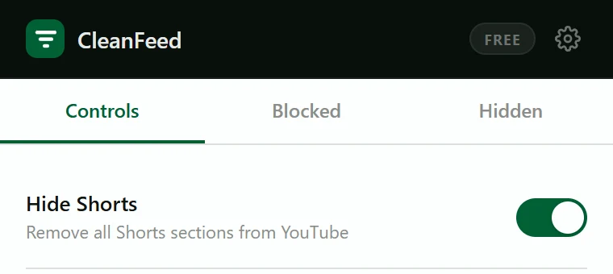
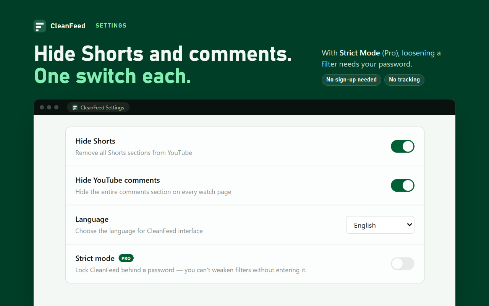

Short answerThere's no official setting to turn Shorts off on youtube.com. “Not interested” and “Show fewer Shorts” only reduce how many you see. To remove Shorts sections from Home, Subscriptions, search and the sidebar, use a browser extension. In CleanFeed it's one switch: Hide Shorts.
YouTube's own options on a computer
Hide Shorts with CleanFeed
CleanFeed is a free Chrome extension. Hide Shorts is part of the free plan, and it's off until you switch it on.
-
Add CleanFeed to Chrome
Open CleanFeed on the Chrome Web Store and click Add to Chrome. There's no account to create.
-
Open the CleanFeed popup
Click the CleanFeed icon in Chrome's toolbar. If it isn't there, open the puzzle-piece Extensions menu and pin CleanFeed.
-
Switch on Hide Shorts
It's the first switch on the Controls tab. It applies right away in every open YouTube tab, without a reload.

-
Optional: hide comments too
CleanFeed's Settings (the gear icon in the popup) have the same Hide Shorts switch, plus Hide YouTube comments, which removes the whole comments section under videos.


What Hide Shorts removes
- Shorts shelves on Home
- Shorts in your Subscriptions feed (Hide Shorts is one of the two CleanFeed switches that work there)
- Shorts in search results, and the Shorts chip in search filters
- The Shorts entry in YouTube's sidebar
CleanFeed applies it as the page opens, so Shorts sections don't flash up and then vanish.
What it doesn't do: a Short opened from a direct link still plays, and CleanFeed can't change the YouTube app on phones, tablets or TVs. YouTube also changes its pages often; if Shorts start showing up somewhere new, use Report a Bug in CleanFeed's Settings or email factuallogic98@gmail.com.
Hide only some Shorts
If you like Shorts but not certain creators or subjects, leave Hide Shorts off and block those instead:
- Block the channel. Its Shorts leave the Shorts shelves. In the Shorts player, a blocked channel's Short is hidden and paused, so you don't hear it, and playback moves on to the next one that isn't blocked. How to block a channel.
- Block a topic. The same happens in the Shorts player for a topic you've blocked, such as Gaming, Pranks or Brainrot.
Switch Shorts off in Chrome
Hide Shorts is free, with no account. It works in the YouTube tabs you already have open.
Add to Chrome, it's freeSources
- YouTube Help, Manage your recommendations & search results (“Show fewer Shorts”, checked October 13, 2026)
- How-To Geek, republished on Yahoo Tech, how to disable YouTube Shorts, October 7, 2025
- tbreak, YouTube still won't let you properly disable Shorts, April 17, 2026
- 9to5Google, YouTube watch history changes, August 8, 2023